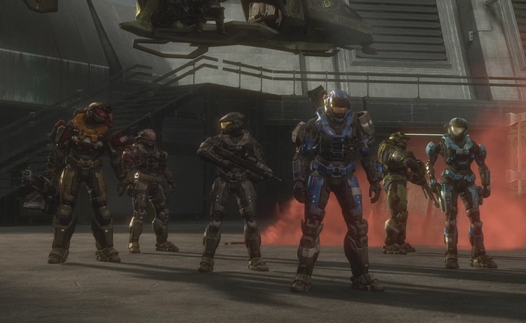

코버넌트와 전쟁 중인 2531년부터 제임스 애커슨 대령의 주도로 실시된 세 번째 스파르탄 프로젝트. 코버넌트와의 전쟁에서 점차 줄어드는 스파르탄 II를 계승하고 대체하기 위해 계획되었다. 개조 수술 부작용이나 장비 보급 및 자금 문제로 많은 수의 스파르탄을 양성할 수 없었던 전 프로젝트들을 보완한, 대규모 스파르탄 양성이 주 목적이었다.
스파르탄 II과는 달리, 코버넌트에 의해 초토화된 이주지의 고아들을 후보생으로 뽑았다. 윤리적인 점에서 막장인 거야 당연히 오십보백보지만, 그나마 스파르탄 II 때보단 나은 점이 딱 한 가지 있는데, 최소한 이들은 처음부터 싸우려고 스스로 지원했다는 것. 대량의 스파르탄을 양성하기 위해 많은 수의 아이들을 모아야 했고, 따라서 코버넌트에게 초토화된 외곽 이주 행성 식민지의 고아들 중에서 선발했는데, 당연히 이들은 코버넌트에게 집과 부모를 잃은 만큼, 나이가 어림에도 불구하고 코버넌트에게 복수할 수 있다는 말을 듣고 오히려 적극적으로 참여했다고 한다 잠시만 눈물 좀 닦고. 거기다 2와는 달리, 이 때는 코버넌트라는 인류의 멸종을 원하는 적대적 외계인 세력이 쳐들어오는 상황이라, 인류 존망의 위기를 극복하기 위한 필요악이라는 변명이라도 가능하고... 소설 '오닉스의 유령'에서 스파르탄 3의 양성 과정이 자세히 나오는데, 커트와 멘데즈 밑에서 스파르탄 III 역시 스파르탄 II와 동일한 훈련을 이수해냈고, 동일한 내용의 강화 수술, 어릴 적부터 체계적이고 살인적인 강도 높은 양성 과정을 받은 것 또한 마찬가지다. 하지만 스파르탄 II보다 더 소모품 취급을 많이 받았으며 자살적인 임무에 더 투입되었다.